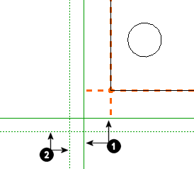
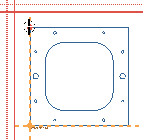

坐标边距
NX 可将坐标尺寸与边距对齐。定义边距是一个可选步骤。如果不定义边距，则 NX 在放置的第一个坐标尺寸周围自动判断边距。您定义的边距是可见。系统自动判断的边距则是不可见的。
|
 |
|
|
|---|
|
|
|
实线表示活动的边距。点线表示不活动的边距。坐标尺寸捕捉到活动边距上的位置。 |
 活动的边距
活动的边距 不活动的边距
不活动的边距在一个坐标集中可以有多个水平和竖直边距。每个坐标集的水平和竖直边距限制是 32。如果您选择两个共线边距，它们将计为一个边距。如果创建了多个竖直边距（或多个水平边距），则最后创建的将成为活动的边距。
NX 使用活动的边距来放置下一个尺寸。通过双击另一边距，或通过右键单击它并选择设为活动的，可使另一边距变为活动的。通过右键单击某边距偏置并选择移动，还可对其进行重定义。
尺寸总是放在边距线远离视图中心的那一侧。
您可以使用“边距”方法选项或“捕捉点”选项来创建这些边距。
|
注释 |
坐标尺寸关联到它们在其上放置的边距。如果移动边距，尺寸也随之移动。如果删除边距，则系统将为尺寸自动判断一个边距。 |
位于何处？
在坐标尺寸对话条中，单击定义边距  .
.
边距原点
通过将点指定为边距原点来定义边距。当定义边距打开时，边距原点显示为一个实心的圆。

在显示边距原点时：
-
当光标放在边距原点上面时，通过该边距原点定义的边距会高亮显示。

这可帮助您找到通过某个特定边距原点定义的边距，因为您可以在一个坐标集中有多个边距原点。
-
可见的边距原点还让用户可以使用“重新定义”和“删除”快捷选项。
-
当移动边距时，“偏置”是从边距原点的位置计算的。